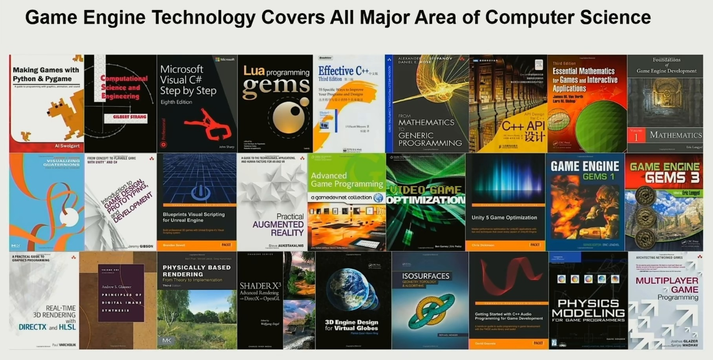
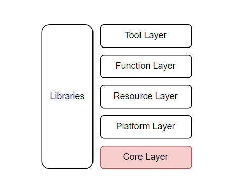
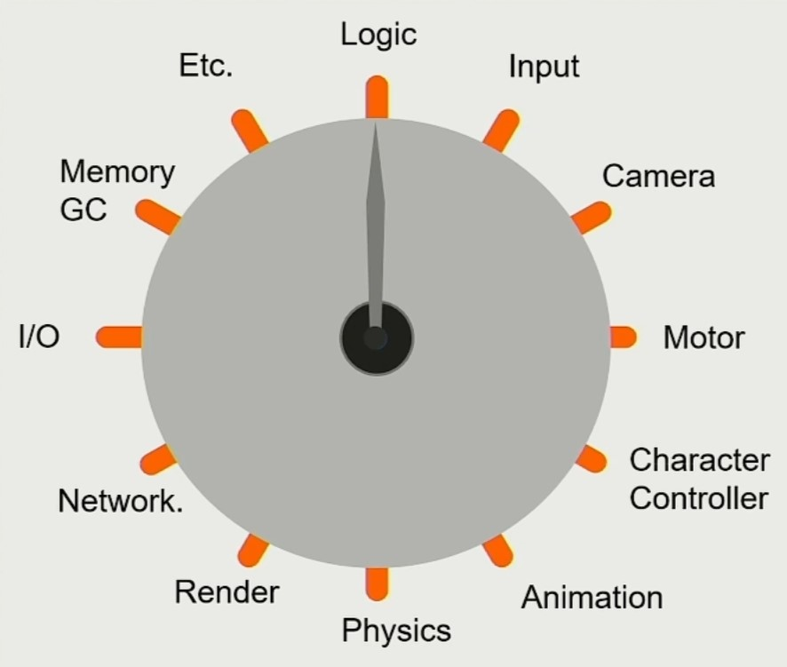
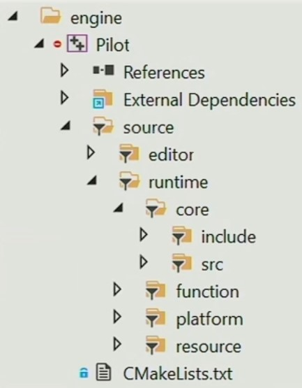

什么是游戏引擎
维基百科
游戏引擎是指一些已编写好的可编辑电脑游戏系统或者一些交互式实时图像应用程序的核心组件。
这些系统为游戏设计者提供编写游戏所需的各种工具，目的在于让游戏设计者能够快速地做出游戏，而不用从零开始。
王希老师
- 黑客帝国的技术基石；
- 生产创意的工具；
- 复杂性系统的艺术。
Zong
从客观来上说，游戏引擎是一堆游戏底层所需的模块的集合，但是如果你将其当作一个复杂的机器或者世界，那它就是人类艺术的集大成作。
尊重它，欣赏它，理解它。
游戏引擎会为你提供一套完整的开发工具链，以供你开发各种各样的游戏，甚至是影视。
怎么学习游戏引擎
游戏引擎内含了现有的大部分科学知识，那些东西需要你花几乎一辈子去钻研才能真正理解。

所以在这里，我更多的是为你构建出游戏引擎的理论框架，剩下的需要你自己以后慢慢填补。
游戏引擎框架

从上往下依次是工具层、功能层、资源层、平台层和核心层，再加上贯穿始终的第三方库。
在这里我将平台层放在核心层之上，意在指通过抽象 API 将核心层的代码在平台层中实现（override）和完善。
工具层
为开发者提供编辑器工具，比如蓝图。
功能层
主要是通过底层的核心模块实现引擎开发所需的主要功能，并按序 Tick 每一个功能模块。

多线程间的调度与管理也属于这一层。
资源层
主要是要记录资源内部和资源间的引用关系以及管理资产的生命周期。
举个例子，Assimp 引入模型时会构建类似以下的存储结构。

平台层
主要是根据不同的游戏平台以及渲染接口异化核心层引出的 API （重载虚函数以实现多态）。
核心层
内含数学库，事件监听，日志等等核心功能。
数据结构和内存管理也属于该层，通过优化底层的数据存放以减少内存的空洞。
Vitar Engine
在 Vitar Engine 中，我并没有严格按照上述引擎架构规划目录结构。
你可以参考 Piccolo Engine。

但是在这个文档中，我尝试
然而在本文档中，我将尝试按照上述引擎架构对文章进行分类。不过没有工具层，因为它主要是重载和组装功能层，并且平台层将与核心层写在一起，而不是为其创建新的目录。